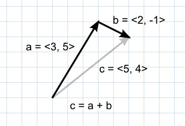
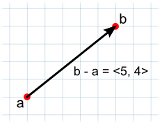
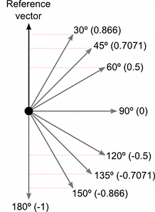
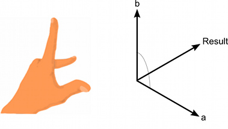
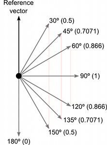

Understanding Vector Arithmetic
Vector arithmetic is fundamental to 3D graphics, physics and animation and it is useful to understand it in depth to get the most out of Unity. Below are descriptions of the main operations and some suggestions about the many things they can be used for.
Addition
When two vectors are added together, the result is equivalent to taking the original vectors as "steps", one after the other. Note that the order of the two parameters doesn't matter, since the result is the same either way.

If the first vector is taken as a point in space then the second can be interpreted as an offset or "jump" from that position. For example, to find a point 5 units above a location on the ground, you could use the following calculation:-
var pointInAir = pointOnGround + new Vector3(0, 5, 0);
If the vectors represent forces then it is more intuitive to think of them in terms of their direction and magnitude (the magnitude indicates the size of the force). Adding two force vectors results in a new vector equivalent to the combination of the forces. This concept is often useful when applying forces with several separate components acting at once (eg, a rocket being propelled forward may also be affected by a crosswind).
Subtraction
Vector subtraction is most often used to get the direction and distance from one object to another. Note that the order of the two parameters does matter with subtraction:-

// The vector d has the same magnitude as c but points in the opposite direction. var c = b - a; var d = a - b;
As with numbers, adding the negative of a vector is the same as subtracting the positive.
// These both give the same result. var c = a - b; var c = a + -b;
The negative of a vector has the same magnitude as the original and points along the same line but in the exact opposite direction.
Scalar Multiplication and Division
When discussing vectors, it is common to refer to an ordinary number (eg, a float value) as a scalar. The meaning of this is that a scalar only has "scale" or magnitude whereas a vector has both magnitude and direction.
Multiplying a vector by a scalar results in a vector that points in the same direction as the original. However, the new vector's magnitude is equal to the original magnitude multiplied by the scalar value.
Likewise, scalar division divides the original vector's magnitude by the scalar.
These operations are useful when the vector represents a movement offset or a force. They allow you to change the magnitude of the vector without affecting its direction.
When any vector is divided by its own magnitude, the result is a vector with a magnitude of 1, which is known as a normalized vector. If a normalized vector is multiplied by a scalar then the magnitude of the result will be equal to that scalar value. This is useful when the direction of a force is constant but the strength is controllable (eg, the force from a car's wheel always pushes forwards but the power is controlled by the driver).
Dot Product
The dot product takes two vectors and returns a scalar. This scalar is equal to the magnitudes of the two vectors multiplied together and the result multiplied by the cosine of the angle between the vectors. When both vectors are normalized, the cosine essentially states how far the first vector extends in the second's direction (or vice-versa - the order of the parameters doesn't matter).

It is easy enough to think in terms of angles and then find the corresponding cosines using a calculator. However, it is useful to get an intuitive understanding of some of the main cosine values as shown in the diagram below:-

The dot product is a very simple operation that can be used in place of the Mathf.Cos function or the vector magnitude operation in some circumstances (it doesn't do exactly the same thing but sometimes the effect is equivalent). However, calculating the dot product function takes much less CPU time and so it can be a valuable optimization.
Cross Product
The other operations are defined for 2D and 3D vectors and indeed vectors with any number of dimensions. The cross product, by contrast, is only meaningful for 3D vectors. It takes two vectors as input and returns another vector as its result.
The result vector is perpendicular to the two input vectors. The "left hand rule" can be used to remember the direction of the output vector from the ordering of the input vectors. If the first parameter is matched up to the thumb of the hand and the second parameter to the forefinger, then the result will point in the direction of the middle finger. If the order of the parameters is reversed then the resulting vector will point in the exact opposite direction but will have the same magnitude.

The magnitude of the result is equal to the magnitudes of the input vectors multiplied together and then that value multiplied by the sine of the angle between them. Some useful values of the sine function are shown below:-

The cross product can seem complicated since it combines several useful pieces of information in its return value. However, like the dot product, it is very efficient mathematically and can be used to optimize code that would otherwise depend on slow transcendental functions.
Page last updated: 2011-08-26